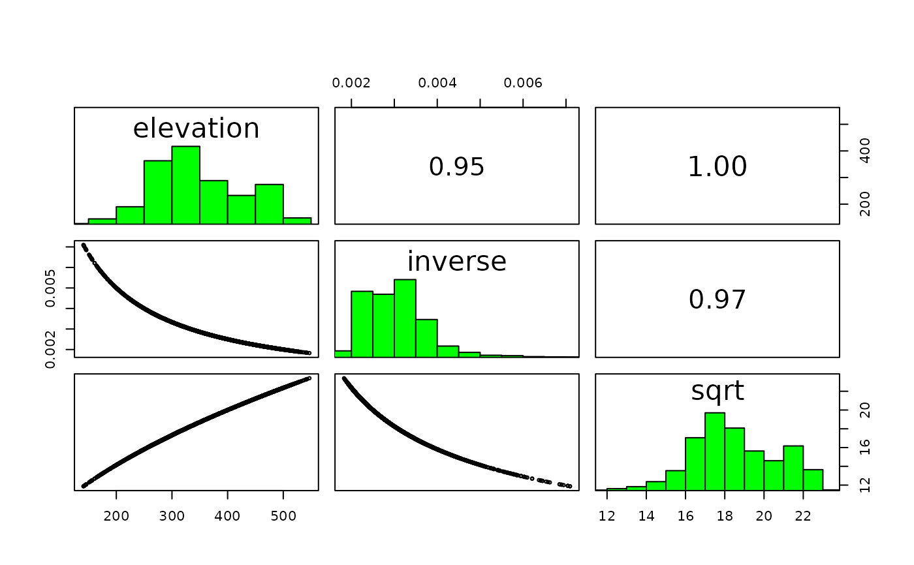

Pairs plot of attributes for stars objects. This is equivalent to
terra::pairs() but works with stars objects.
Usage
# S4 method for class 'stars'
pairs(
x,
hist = TRUE,
cor = TRUE,
use = "pairwise.complete.obs",
maxcells = 1e+05,
...
)Arguments
- x
SpatRaster
- hist
logical. If TRUE a histogram of the values is shown on the diagonal
- cor
logical. If TRUE the correlation coefficient is shown in the upper panels
- use
argument passed to the
corfunction- maxcells
integer. Number of pixels to sample from each layer of a large SpatRaster
- ...
additional arguments (graphical parameters)
Examples
r <- terra::rast(system.file("ex/elev.tif", package = "terra"))
s <- c(r, 1 / r, sqrt(r))
names(s) <- c("elevation", "inverse", "sqrt")
terra::pairs(s)

s_stars <- stars::st_as_stars(s, as_attributes = TRUE)
pairs(s_stars)